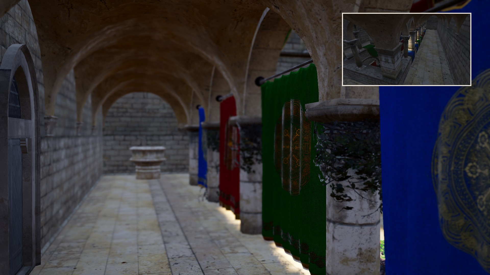

Cameras in ECS
Camera assets, frame scheduling and dependency checks.
Engine systems / LENS
Cameras and cinematic frames
Camera scenes as data: several cameras, frame scheduling, image capture and authoring through MCP and Studio.
in development since Nov 20, 2026

Camera assets, frame scheduling and dependency checks.
Managed colour and depth targets for every camera.
Camera rigs and separate temporal state for every camera.
Overlays, split-screen, picture-in-picture and a director that blends between cameras.
Per-camera post-processing, exposure and depth of field; layer masks.
GPU readback and PNG output.
A cameras window in Studio, skills and MCP tools for agents.
Primary frame compared with its replay into a secondary camera.
Camera scheduling by priority and dependencies, a base camera with overlays, a director that picks views and blends between them, split-screen and picture-in-picture in one screen pass. The inset is shown in the Sponza frame on Metal; split-screen and the director are covered by tests without a GPU so far.
Each camera has its own PRISMA post-processing, TAA and reflection history, exposure and visible-layer mask. Shown on Metal in the Sponza frame for the main camera; two differently processed cameras in one frame and layer masks are not shown in a frame yet.
Per-camera exposure and DoF from lens parameters through PRISMA; checked on Mac (Metal).
EXR recording, spline rails and noise shake; checked on Mac (Metal).
Stereo camera pairs and eye views built from XR runtime data, independent of any SDK, are ready. OpenXR itself is still to be connected: headset swapchain, frame submission and reprojection; nothing has run on a headset yet.
Six cubemap face views, panorama assembly, planar mirrors and linked portals exist in code with tests that run without a GPU; not yet shown in a GPU frame.
 Nov 21, 2026LENS: the lens sets exposure and depth of fieldA camera can be described as a real lens — focal length, aperture, shutter, ISO and focus distance — and the frame gets its exposure and depth of field from them. Smooth camera rails for fly-throughs, camera shake and HDR frame recording to EXR were added.
Nov 21, 2026LENS: the lens sets exposure and depth of fieldA camera can be described as a real lens — focal length, aperture, shutter, ISO and focus distance — and the frame gets its exposure and depth of field from them. Smooth camera rails for fly-throughs, camera shake and HDR frame recording to EXR were added. Nov 20, 2026LENS: cameras as scene data, a Studio window and agent toolsA game's cameras are now described in one cameras.json file: several cameras, their draw order, their own render targets and frame capture. They can be created and edited in a Studio window or through the agent's MCP tools.
Nov 20, 2026LENS: cameras as scene data, a Studio window and agent toolsA game's cameras are now described in one cameras.json file: several cameras, their draw order, their own render targets and frame capture. They can be created and edited in a Studio window or through the agent's MCP tools.Other systems